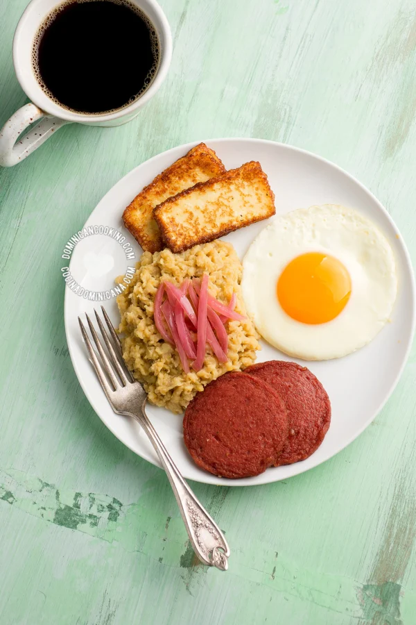

A pesar de nuestro amor por el Mangú aún oigo a veces que "el plátano embrutece". Al parecer es un
dicho muy
común entre dominicanos. Significa que los plátanos se asocian a la inferioridad intelectual. La extensión
popular de este mito es que los niños que comen cereales son más inteligentes que los que comen mangú.

Ingredientes
4platanos verdes
1 ½ cucharadita de sal
4 cucharadas de mantequilla o aceite de oliva>
½ taza de agua a temperatura ambiente
Como hacer la cebolla salteada
cebolla roja grande
2 cucharadas de aceite de oliva
1 cucharadita de vinagre de frutas
i½ cucharadita de sal
Pasos Para Preparar El Mangu
Pelar plátanos: Pela los plátanos (ver como). Corta en
octavos (dos mitades, luego las mitades en
cuartos). Remueve la parte central del plátano donde están las semillas (opcional)
Hervir plátanos: Hierve los plátanos en agua, a la que
has agregado la sal, hasta que estén muy blandos.
Retira del fuego.
Majar plátanos: Maja los plátanos recién sacados del agua
con un tenedor (cuidado de no quemarte).
Agrega mantequilla (o aceite de oliva) y mezcla bien. Agrega el agua fría y mezcla hasta que tengas un
puré bien suave.
Preparar la cebolla
Saltear la cebolla: Corta la cebolla en tiras o ruedas
finas. Calienta el aceite en una sartén a fuego
bajo.
Cuece removiendo hasta que la cebolla se tornen translúcida. Agrega vinagre y sazona con sal al gusto.
Sirve el mangú con la cebolla y acompaña con huevos fritos
o revoltillo, salami, o queso frito.
“Esta receta fue copiada de la página
www.cocinadominicana.com”